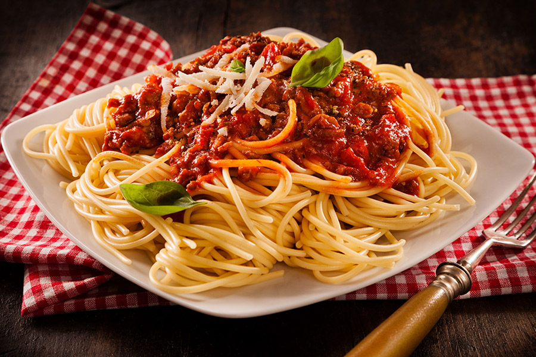

ITALIA
I
TA
LIA
HISTORIA
RESTAURANTES
LUGARES
¿CON QUIEN IRIA?
ITINERARIO
ITALIA
Italia, país europeo con una larga costa mediterránea, influyó considerablemente en la cultura y la cocina occidental. Su capital, Roma, es hogar del Vaticano, de ruinas antiguas y de obras de arte emblemáticas. Otras ciudades importantes son Florencia, con obras maestras del renacimiento, como el "David" de Miguel Ángel y el Domo de Brunelleschi; Venecia, la ciudad de los canales; y Milán, la capital italiana de la moda.
Turismo
Viajar a Italia es la guía del turismo en Italia; donde encontrarás toda la información que necesitas para hacer turismo en Italia. Conoce los procedimientos para visitar sus diferentes ciudades, los usos y costumbres de cada lugar, los medios de transporte y los más interesantes lugares turísticos para visitar y explorar.
Moda
La moda es, junto con el arte, la gastronomía y la naturaleza, uno de los grandes reclamos del turismo internacional, ir de compras en Italia es un modo agradable y divertido de hacer un intervalo entre la visita a una exposición o a un monumento. Para el turista es imposible resistirse a la tentación de la moda. Boutiques de las más famosas marcas o de estilistas emergentes, grandes tiendas de las “maison” más conocidas (a menudo, las mismas estructuras y decoraciones son un espectáculo que no hay que perderse en el sorprendente mundo de la creatividad del Made in Italy), pequeños establecimientos llenos de encanto: toda la península es una irresistible atracción.
Idioma
El italiano (Acerca de este sonido italiano (?·i) o lingua italiana) es una lengua romance que proviene del Toscano arcaico 3 y pertenece al grupo itálico de la familia de lenguas indoeuropeas. Es el idioma oficial de Italia, San Marino, Ciudad del Vaticano y uno de los cuatro idiomas nacionales helvéticos (con el alemán, el francés y el romanche). Es, además, lengua cooficial, con el croata, en el condado de Istria (Croacia), y con el esloveno en los municipios costeros del Litoral esloveno. En Somalia el uso del italiano como segunda lengua, junto al inglés, está regulado por la constitución transitoria de 2004 (art.6).4 El italiano es usado también, como primera o segunda lengua, por varios millones de inmigrantes italianos y sus descendientes esparcidos por el mundo, sobre todo en Europa. Se calcula que en el año 2006, unos 64 millones de ciudadanos comunitarios hablaban el italiano como lengua materna y 14,7 millones como segunda o tercera lengua.5 Núcleos consistentes de italófonos se encuentran también en América y, en menor medida, en África y Oceanía (escasa la presencia en Asia).6
